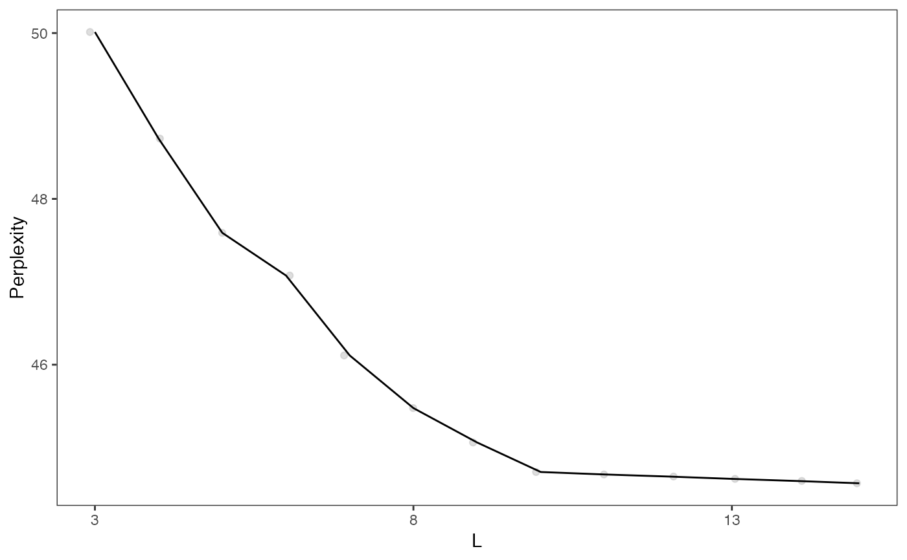
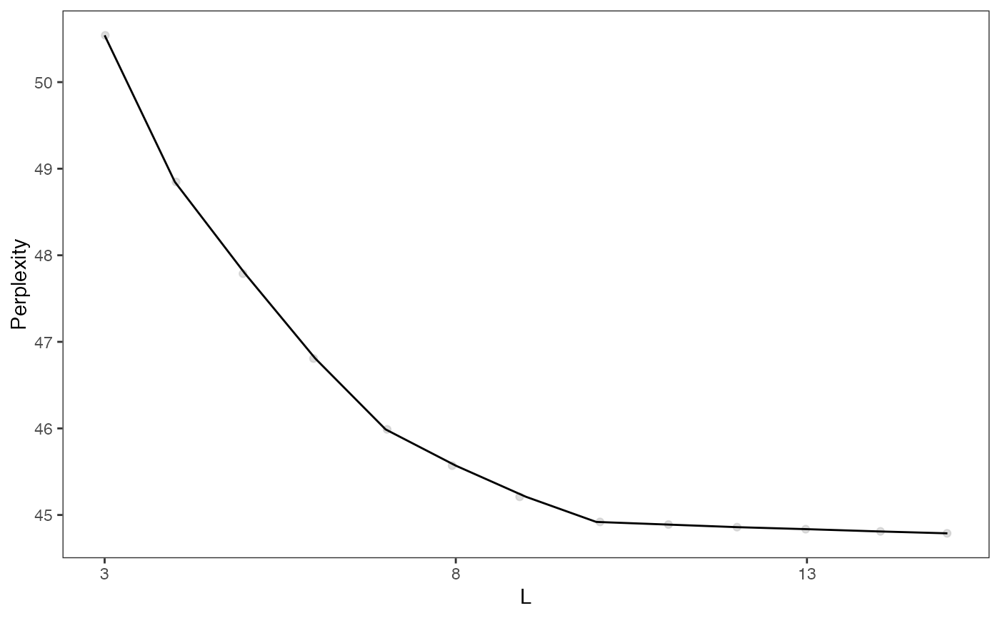
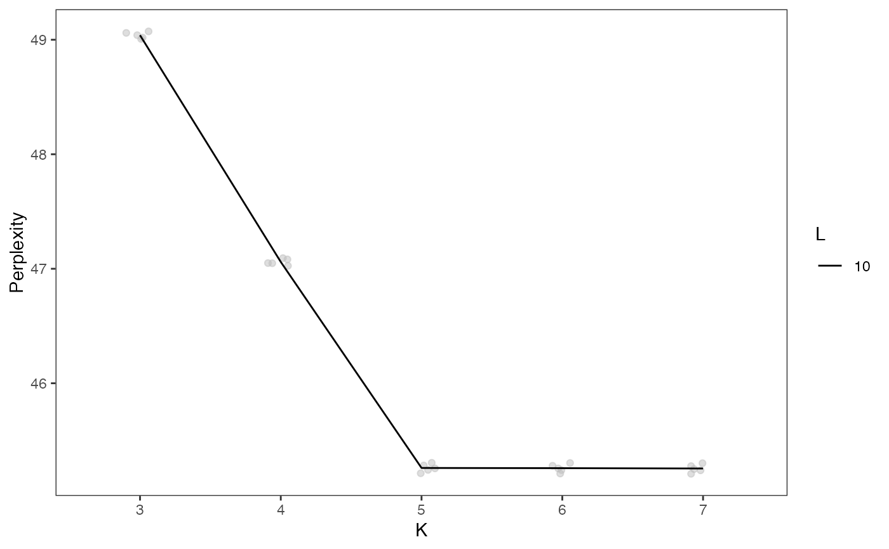

Uses the celda_C model to cluster cells into
population for range of possible K's. The cell population labels of the
previous "K-1" model are used as the initial values in the current model
with K cell populations. The best split of an existing cell population is
found to create the K-th cluster. This procedure is much faster than
randomly initializing each model with a different K. If module labels for
each feature are given in 'yInit', the celda_CG model will be used to
split cell populations based on those modules instead of individual
features. Module labels will also be updated during sampling and thus
may end up slightly different than yInit.
recursiveSplitCell( x, useAssay = "counts", altExpName = "featureSubset", sampleLabel = NULL, initialK = 5, maxK = 25, tempL = NULL, yInit = NULL, alpha = 1, beta = 1, delta = 1, gamma = 1, minCell = 3, reorder = TRUE, seed = 12345, perplexity = TRUE, logfile = NULL, verbose = TRUE ) # S4 method for SingleCellExperiment recursiveSplitCell( x, useAssay = "counts", altExpName = "featureSubset", sampleLabel = NULL, initialK = 5, maxK = 25, tempL = NULL, yInit = NULL, alpha = 1, beta = 1, delta = 1, gamma = 1, minCell = 3, reorder = TRUE, seed = 12345, perplexity = TRUE, logfile = NULL, verbose = TRUE ) # S4 method for matrix recursiveSplitCell( x, useAssay = "counts", altExpName = "featureSubset", sampleLabel = NULL, initialK = 5, maxK = 25, tempL = NULL, yInit = NULL, alpha = 1, beta = 1, delta = 1, gamma = 1, minCell = 3, reorder = TRUE, seed = 12345, perplexity = TRUE, logfile = NULL, verbose = TRUE )
Arguments
| x | A numeric matrix of counts or a
SingleCellExperiment
with the matrix located in the assay slot under |
|---|---|
| useAssay | A string specifying the name of the assay slot to use. Default "counts". |
| altExpName | The name for the altExp slot to use. Default "featureSubset". |
| sampleLabel | Vector or factor. Denotes the sample label for each cell (column) in the count matrix. |
| initialK | Integer. Initial number of cell populations to try.
Default |
| maxK | Integer. Maximum number of cell populations to try.
Default |
| tempL | Integer. Number of temporary modules to identify and use in cell
splitting. Only used if |
| yInit | Integer vector. Module labels for features. Cells will be
clustered using the celda_CG model based on the modules specified in
|
| alpha | Numeric. Concentration parameter for Theta. Adds a pseudocount
to each cell population in each sample. Default |
| beta | Numeric. Concentration parameter for Phi. Adds a pseudocount to
each feature in each cell (if |
| delta | Numeric. Concentration parameter for Psi. Adds a pseudocount
to each feature in each module. Only used if |
| gamma | Numeric. Concentration parameter for Eta. Adds a pseudocount
to the number of features in each module. Only used if |
| minCell | Integer. Only attempt to split cell populations with at least this many cells. |
| reorder | Logical. Whether to reorder cell populations using hierarchical clustering after each model has been created. If FALSE, cell populations numbers will correspond to the split which created the cell populations (i.e. 'K15' was created at split 15, 'K16' was created at split 16, etc.). Default TRUE. |
| seed | Integer. Passed to with_seed. For reproducibility, a default value of 12345 is used. If NULL, no calls to with_seed are made. |
| perplexity | Logical. Whether to calculate perplexity for each model. If FALSE, then perplexity can be calculated later with resamplePerplexity. Default TRUE. |
| logfile | Character. Messages will be redirected to a file named "logfile". If NULL, messages will be printed to stdout. Default NULL. |
| verbose | Logical. Whether to print log messages. Default TRUE. |
Value
A SingleCellExperiment object. Function
parameter settings and celda model results are stored in the
metadata "celda_grid_search" slot. The models in
the list will be of class celda_C if yInit = NULL or
celda_CG if zInit is set.
See also
recursiveSplitModule for recursive splitting of feature modules.
Examples
data(sceCeldaCG) ## Create models that range from K = 3 to K = 7 by recursively splitting ## cell populations into two to produce \link{celda_C} cell clustering models sce <- recursiveSplitCell(sceCeldaCG, initialK = 3, maxK = 7)#>#>#>#>#>#>#>#>#>#>#>#>## Alternatively, first identify features modules using ## \link{recursiveSplitModule} moduleSplit <- recursiveSplitModule(sceCeldaCG, initialL = 3, maxL = 15)#>#>#>#>#>#>#>#>#>#>#>#>#>#>#>#>#>#>#>#>#>moduleSplitSelect <- subsetCeldaList(moduleSplit, list(L = 10)) ## Then use module labels for initialization in \link{recursiveSplitCell} to ## produce \link{celda_CG} bi-clustering models cellSplit <- recursiveSplitCell(sceCeldaCG, initialK = 3, maxK = 7, yInit = celdaModules(moduleSplitSelect))#>#>#>#>#>#>#>#>#>#>#>#>#>sce <- subsetCeldaList(cellSplit, list(K = 5, L = 10)) data(celdaCGSim, celdaCSim) ## Create models that range from K = 3 to K = 7 by recursively splitting ## cell populations into two to produce \link{celda_C} cell clustering models sce <- recursiveSplitCell(celdaCSim$counts, initialK = 3, maxK = 7)#>#>#>#>#>#>#>#>#>#>#>#>## Alternatively, first identify features modules using ## \link{recursiveSplitModule} moduleSplit <- recursiveSplitModule(celdaCGSim$counts, initialL = 3, maxL = 15)#>#>#>#>#>#>#>#>#>#>#>#>#>#>#>#>#>#>#>#>#>moduleSplitSelect <- subsetCeldaList(moduleSplit, list(L = 10)) ## Then use module labels for initialization in \link{recursiveSplitCell} to ## produce \link{celda_CG} bi-clustering models cellSplit <- recursiveSplitCell(celdaCGSim$counts, initialK = 3, maxK = 7, yInit = celdaModules(moduleSplitSelect))#>#>#>#>#>#>#>#>#>#>#>#>#>